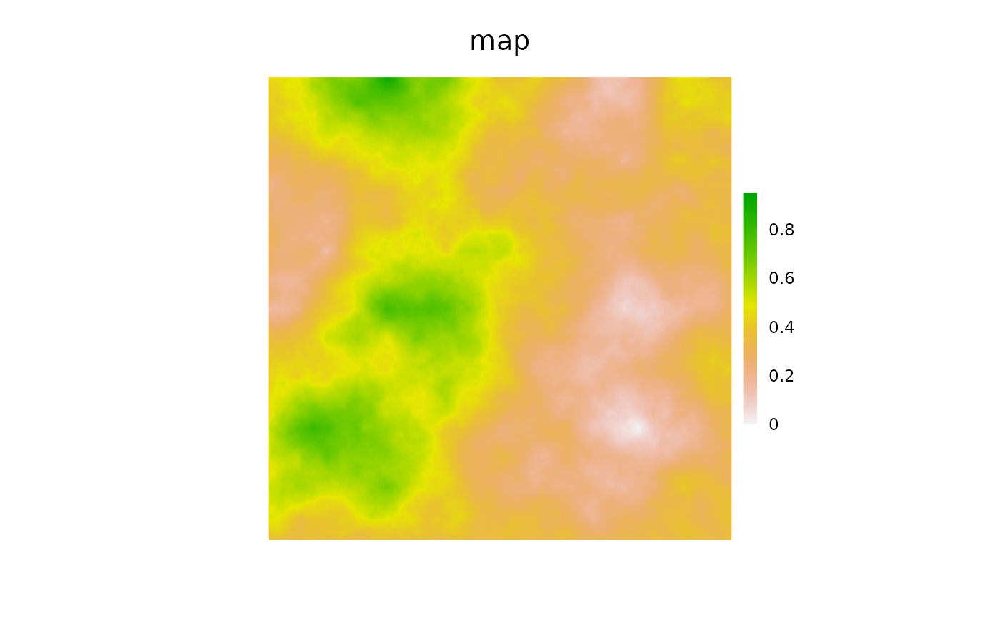

SpaDES simulationsvignettes/iii-cache.Rmd
iii-cache.RmdAs part of a reproducible work flow, caching of various function
calls are a critical component. Down the road, it is likely that an
entire work flow from raw data to publication, decision support, report
writing, presentation building etc., could be built and be reproducible
anywhere, on demand. The reproducible::Cache function is
built to work with any R function. However, it becomes very powerful in
a SpaDES context because we can build large, powerful
applications that are transparent and tied to the raw data that may be
many conceptual steps upstream in the workflow. To do this, we
have built several customizations within the SpaDES
package. Important to this is dealing correctly with the
simList, which is an object that has slot that is an
environment. But more important are the various tools that can be used
at higher levels, i.e., not just for “standard” functions.
SpaDES
Some of the details of the simList-specific features of
this Cache function include:
The function converts all elements that have an environment as
part of their attributes into a format that has no unique environment
attribute, using format if a function, and
as.list in the case of the simList
environment.
When used within SpaDES modules, Cache
(capital C) does not require that the argument cachePath be
specified. If called from inside a SpaDES module, Cache
will use the cachePath argument from a call to
cachePath(sim), taking the sim from the call
stack. Similarly, if no cachePath argument is specified,
then it will use getOption("spades.cachePath"), which will,
by default, be a temporary location with no persistence between R
sessions! To persist between sessions, use
SpaDES::setPaths() every session.
In a SpaDES context, there are several levels of caching
that can be used as part of a reproducible workflow. Each level can be
used to a modeller’s advantage; and, all can be – and are often – used
concurrently.
spades level
And entire call to spades can be cached. This will have
the effect of eliminating any stochasticity in the model as the output
will simply be the cached version of the simList. This is
likely most useful in situations where reproducibility is more important
than “new” stochasticity (e.g., building decision support
systems, apps, final version of a manuscript).
library(terra)
library(reproducible)
library(SpaDES.core)
mySim <- simInit(
times = list(start = 0.0, end = 3.0),
params = list(
.globals = list(stackName = "landscape", burnStats = "testStats"),
randomLandscapes = list(.plotInitialTime = NA),
fireSpread = list(.plotInitialTime = NA)
),
modules = list("randomLandscapes", "fireSpread"),
paths = list(modulePath = getSampleModules(tempdir()))
)This functionality can be achieved within a spades
call.
# compare caching ... run once to create cache
system.time({
outSim <- spades(Copy(mySim), cache = TRUE, notOlderThan = Sys.time())
})## Loading required package: RColorBrewer## Jul05 15:13:51 Using setDTthreads(1). To change: 'options(spades.DTthreads = X)'.## Jul05 15:13:51 chckpn total elpsd: 0.0037 secs | 0 checkpoint init 0## Jul05 15:13:51 save total elpsd: 0.0065 secs | 0 save init 0## Jul05 15:13:51 prgrss total elpsd: 0.0089 secs | 0 progress init 0## Jul05 15:13:51 load total elpsd: 0.011 secs | 0 load init 0## Jul05 15:13:51 rndmLn total elpsd: 0.013 secs | 0 randomLandscapes init## Jul05 15:13:51 rndmLn The legacy packages maptools, rgdal, and rgeos, underpinning the sp package,which was just loaded, will retire in October 2023.Please refer to R-spatial evolution reports for details, especiallyhttps://r-spatial.org/r/2023/05/15/evolution4.html.It may be desirable to make the sf package available;package maintainers should consider adding sf to Suggests:.The sp package is now running under evolution status 2 (status 2 uses the sf package in place of rgdal)## Jul05 15:13:52 rndmLn New objects created:## Jul05 15:13:52 rndmLn 1: landscape## Jul05 15:13:52 frSprd total elpsd: 1.7 secs | 0 fireSpread init 1## Jul05 15:13:52 frSprd New objects created:## Jul05 15:13:52 frSprd 1: testStats## Jul05 15:13:52 frSprd total elpsd: 1.8 secs | 1 fireSpread burn 5## Jul05 15:13:53 frSprd total elpsd: 1.9 secs | 1 fireSpread stats 5## Jul05 15:13:53 frSprd total elpsd: 1.9 secs | 2 fireSpread burn 5## Jul05 15:13:53 frSprd total elpsd: 2 secs | 2 fireSpread stats 5## Jul05 15:13:53 frSprd total elpsd: 2 secs | 3 fireSpread burn 5## Jul05 15:13:53 frSprd total elpsd: 2 secs | 3 fireSpread stats 5## simList saved in
## SpaDES.core:::.pkgEnv$.sim
## It will be deleted at next spades() call.## Saving large object (cacheId: 3c15f60e1947c2e7) to Cache: 83 Mb## Done!## user system elapsed
## 5.037 0.196 5.237Note that if there were any visualizations (here we turned them off
with .plotInitialTime = NA above) they will happen the
first time through, but not the cached times.
# faster 2nd time
system.time({
outSimCached <- spades(Copy(mySim), cache = TRUE)
})## ...(Object to retrieve (3c15f60e1947c2e7.rds))## loaded cached result from previous spades call## user system elapsed
## 0.566 0.004 0.572
all.equal(outSim, outSimCached) ## [1] "Names: 3 string mismatches"
## [2] "Length mismatch: comparison on first 4 components"
## [3] "Component 2: Modes: numeric, NULL"
## [4] "Component 2: Lengths: 4, 0"
## [5] "Component 2: target is numeric, current is NULL"
## [6] "Component 3: target is NULL, current is PackedSpatRaster"
## [7] "Component 4: Modes: S4, numeric"
## [8] "Component 4: Lengths: 1, 3"
## [9] "Component 4: Attributes: < Modes: list, NULL >"
## [10] "Component 4: Attributes: < Lengths: 4, 0 >"
## [11] "Component 4: Attributes: < names for target but not for current >"
## [12] "Component 4: Attributes: < current is not list-like >"If the parameter .useCache in the module’s metadata is
set to TRUE, then every event in the module will
be cached. That means that every time that module is called from within
a spades() call, Cache will be called. Only
the objects inside the simList that correspond to the
inputObjects or the outputObjects from the
module metadata will be assessed for caching. For general use,
module-level caching would be mostly useful for modules that have no
stochasticity, such as data-preparation modules, GIS modules etc.
In this example, we will use the cache on the
randomLandscapes module. This means that each subsequent
call to spades will result in identical outputs from the
randomLandscapes module (only!). This would be useful when
only one random landscape is needed simply for trying something out, or
putting into production code (e.g., publication, decision
support, etc.).
# Module-level
params(mySim)$randomLandscapes$.useCache <- TRUE
system.time({
randomSim <- spades(Copy(mySim), .plotInitialTime = NA,
notOlderThan = Sys.time(), debug = TRUE)
})## Jul05 15:13:57 Using setDTthreads(1). To change: 'options(spades.DTthreads = X)'.## Jul05 15:13:57 chckpn eventTime moduleName eventType eventPriority## Jul05 15:13:57 chckpn 0 checkpoint init 0 ## Jul05 15:13:57 save 0 save init 0 ## Jul05 15:13:57 prgrss 0 progress init 0 ## Jul05 15:13:57 load 0 load init 0 ## Jul05 15:13:57 rndmLn 0 randomLandscapes init 1 ## Jul05 15:13:59 rndmLn Saving large object (cacheId: aaac067c5d4f51ca) to Cache: 82.9 Mb## Jul05 15:14:00 rndmLn Done!## Jul05 15:14:00 rndmLn New objects created:## Jul05 15:14:00 rndmLn 1: landscape## Jul05 15:14:00 frSprd 0 fireSpread init 1 ## Jul05 15:14:00 frSprd New objects created:## Jul05 15:14:00 frSprd 1: testStats## Jul05 15:14:00 frSprd 1 fireSpread burn 5 ## Jul05 15:14:00 frSprd 1 fireSpread stats 5 ## Jul05 15:14:00 frSprd 2 fireSpread burn 5 ## Jul05 15:14:00 frSprd 2 fireSpread stats 5 ## Jul05 15:14:00 frSprd 3 fireSpread burn 5 ## Jul05 15:14:00 frSprd 3 fireSpread stats 5 ## simList saved in
## SpaDES.core:::.pkgEnv$.sim
## It will be deleted at next spades() call.## user system elapsed
## 3.133 0.072 3.206
# faster the second time
system.time({
randomSimCached <- spades(Copy(mySim), .plotInitialTime = NA, debug = TRUE)
})## Jul05 15:14:01 Using setDTthreads(1). To change: 'options(spades.DTthreads = X)'.## Jul05 15:14:01 chckpn eventTime moduleName eventType eventPriority## Jul05 15:14:01 chckpn 0 checkpoint init 0 ## Jul05 15:14:01 save 0 save init 0 ## Jul05 15:14:01 prgrss 0 progress init 0 ## Jul05 15:14:01 load 0 load init 0 ## Jul05 15:14:01 rndmLn 0 randomLandscapes init 1 ## Jul05 15:14:01 rndmLn ...(Object to retrieve (aaac067c5d4f51ca.rds))## Jul05 15:14:02 rndmLn loaded cached copy of randomLandscapes module adding to memoised copy## Jul05 15:14:02 rndmLn New objects created:## Jul05 15:14:02 rndmLn 1: landscape## Jul05 15:14:02 frSprd 0 fireSpread init 1 ## Jul05 15:14:02 frSprd New objects created:## Jul05 15:14:02 frSprd 1: testStats## Jul05 15:14:02 frSprd 1 fireSpread burn 5 ## Jul05 15:14:02 frSprd 1 fireSpread stats 5 ## Jul05 15:14:02 frSprd 2 fireSpread burn 5 ## Jul05 15:14:02 frSprd 2 fireSpread stats 5 ## Jul05 15:14:02 frSprd 3 fireSpread burn 5 ## Jul05 15:14:02 frSprd 3 fireSpread stats 5 ## simList saved in
## SpaDES.core:::.pkgEnv$.sim
## It will be deleted at next spades() call.## user system elapsed
## 1.076 0.000 1.078Test that only layers produced in randomLandscapes are
identical, not fireSpread.
layers <- list("DEM", "forestAge", "habitatQuality", "percentPine", "Fires")
same <- lapply(layers, function(l)
identical(randomSim$landscape[[l]], randomSimCached$landscape[[l]]))
names(same) <- layers
print(same) # Fires is not same because all non-init events in fireSpread are not cached## $DEM
## [1] FALSE
##
## $forestAge
## [1] FALSE
##
## $habitatQuality
## [1] FALSE
##
## $percentPine
## [1] FALSE
##
## $Fires
## [1] FALSEIf the parameter .useCache in the module’s metadata is
set to a character or character vector, then that or those
event(s), identified by their name, will be cached. That means that
every time the event is called from within a spades call,
Cache will be called. Only the objects inside the
simList that correspond to the inputObjects or
the outputObjects as defined in the module metadata will be
assessed for caching inputs or outputs, respectively. The fact that all
and only the named inputObjects and
outputObjects are cached and returned may be inefficient
(i.e., it may cache more objects than are necessary) for
individual events.
Similar to module-level caching, event-level caching would be mostly
useful for events that have no stochasticity, such as data-preparation
events, GIS events etc. Here, we don’t change the module-level caching
for randomLandscapes, but we add to it a cache for only the
“init” event for fireSpread.
params(mySim)$fireSpread$.useCache <- "init"
system.time({
randomSim <- spades(Copy(mySim), .plotInitialTime = NA,
notOlderThan = Sys.time(), debug = TRUE)
})## Jul05 15:14:02 Using setDTthreads(1). To change: 'options(spades.DTthreads = X)'.## Jul05 15:14:02 chckpn eventTime moduleName eventType eventPriority## Jul05 15:14:02 chckpn 0 checkpoint init 0 ## Jul05 15:14:02 save 0 save init 0 ## Jul05 15:14:02 prgrss 0 progress init 0 ## Jul05 15:14:02 load 0 load init 0 ## Jul05 15:14:02 rndmLn 0 randomLandscapes init 1 ## Jul05 15:14:04 rndmLn Saving large object (cacheId: aaac067c5d4f51ca) to Cache: 82.9 Mb## Jul05 15:14:05 rndmLn Done!## Jul05 15:14:05 rndmLn New objects created:## Jul05 15:14:05 rndmLn 1: landscape## Jul05 15:14:05 frSprd 0 fireSpread init 1 ## Jul05 15:14:07 frSprd Saving large object (cacheId: 5f571a97d9f99003) to Cache: 83 Mb## Jul05 15:14:07 frSprd Done!## Jul05 15:14:07 frSprd New objects created:## Jul05 15:14:07 frSprd 1: testStats## Jul05 15:14:07 frSprd 1 fireSpread burn 5 ## Jul05 15:14:08 frSprd 1 fireSpread stats 5 ## Jul05 15:14:08 frSprd 2 fireSpread burn 5 ## Jul05 15:14:08 frSprd 2 fireSpread stats 5 ## Jul05 15:14:08 frSprd 3 fireSpread burn 5 ## Jul05 15:14:08 frSprd 3 fireSpread stats 5 ## simList saved in
## SpaDES.core:::.pkgEnv$.sim
## It will be deleted at next spades() call.## user system elapsed
## 5.380 0.020 5.405
# faster the second time
system.time({
randomSimCached <- spades(Copy(mySim), .plotInitialTime = NA, debug = TRUE)
})## Jul05 15:14:08 Using setDTthreads(1). To change: 'options(spades.DTthreads = X)'.## Jul05 15:14:08 chckpn eventTime moduleName eventType eventPriority## Jul05 15:14:08 chckpn 0 checkpoint init 0 ## Jul05 15:14:08 save 0 save init 0 ## Jul05 15:14:08 prgrss 0 progress init 0 ## Jul05 15:14:08 load 0 load init 0 ## Jul05 15:14:08 rndmLn 0 randomLandscapes init 1 ## Jul05 15:14:08 rndmLn ...(Object to retrieve (aaac067c5d4f51ca.rds))## Jul05 15:14:08 rndmLn loaded cached copy of randomLandscapes module adding to memoised copy## Jul05 15:14:08 rndmLn New objects created:## Jul05 15:14:08 rndmLn 1: landscape## Jul05 15:14:08 frSprd 0 fireSpread init 1 ## Jul05 15:14:09 frSprd ...(Object to retrieve (5f571a97d9f99003.rds))## Jul05 15:14:09 frSprd loaded cached copy of init event in fireSpread module. ## Jul05 15:14:09 frSprd New objects created:## Jul05 15:14:09 frSprd 1: testStats## Jul05 15:14:09 frSprd 1 fireSpread burn 5 ## Jul05 15:14:09 frSprd 1 fireSpread stats 5 ## Jul05 15:14:09 frSprd 2 fireSpread burn 5 ## Jul05 15:14:09 frSprd 2 fireSpread stats 5 ## Jul05 15:14:09 frSprd 3 fireSpread burn 5 ## Jul05 15:14:09 frSprd 3 fireSpread stats 5 ## simList saved in
## SpaDES.core:::.pkgEnv$.sim
## It will be deleted at next spades() call.## user system elapsed
## 1.245 0.004 1.253Any function can be cached using:
Cache(FUN = functionName, ...).
This will be a slight change to a function call, such as:
projectRaster(raster, crs = crs(newRaster)) to
Cache(projectRaster, raster, crs = crs(newRaster)).
ras <- terra::rast(terra::ext(0, 1e3, 0, 1e3), res = 1, vals = 1)
system.time({
map <- Cache(SpaDES.tools::neutralLandscapeMap(ras),
cachePath = cachePath(mySim),
userTags = "neutralLandscapeMap",
notOlderThan = Sys.time())
})## Warning: In (SpaDES.tools::neutralLandscapeMap(ras))(): nlm_mpd changes the
## dimensions of the RasterLayer if even ncols/nrows are choosen.## user system elapsed
## 0.802 0.021 0.826
# faster the second time
system.time({
mapCached <- Cache(SpaDES.tools::neutralLandscapeMap(ras),
cachePath = cachePath(mySim),
userTags = "neutralLandscapeMap")
})## ...(Object to retrieve (94d035af43fc613d.rds))## loaded cached result from previous SpaDES.tools::neutralLandscapeMap call## user system elapsed
## 0.114 0.000 0.115
all.equal(map[], mapCached[]) # note --> can't use all.equal on SpatRaster -- they are pointers ## [1] TRUESince the cache is simply a DBI database table, all
DBI functions will work as is. In addition, there are
several helpers in the reproducible package, including
showCache, keepCache and
clearCache, and the more advanced createCache,
loadFromCache, rmFromCache, and
saveToCache that may be useful. Also, one can access cached
items manually (rather than simply rerunning the same Cache
function again).
cacheDB <- showCache(mySim, userTags = "neutralLandscapeMap")## Cache size: ## Total (including Rasters): 1.9 Mb## Selected objects (not including Rasters): 1.9 Mb
## get the RasterLayer that was produced with neutralLandscapeMap()
map <- loadFromCache(cacheId = cacheDB$cacheId, cachePath = cachePath(mySim))## loaded cached result from previous call
In general, we feel that a liberal use of Cache will
make a reusable and reproducible work flow. shiny apps can
be made, taking advantage of Cache. Indeed, much of the
difficulty in managing data sets and saving them for future use, can be
accommodated by caching.
simInit() --> many .inputObjects calls
spades() call --> many module calls --> many event calls --> many function callsLets say we start to introduce caching to this structure. We start
from the “inner” most functions that we could imaging Caching would be
useful. Lets say there are some GIS operations, like
raster::projectRaster, which operates on an input
shapefile. We can Cache the projectRaster call to make this
much faster, since it will always be the same result for a given input
raster.
If we look back at our structure above, we see that we still have
LOTS of places that are not Cached. That means that the
spades() call will still spawn many module calls, and many
event calls, just to get to the one Cache(projectRaster)
call which is cached. This function will likely be called many times.
This is good, but Cache does take some
time. So, even if Cache(projectRaster) takes only
0.02 seconds, calling it hundreds of times means maybe 4 seconds. If we
are doing this for many functions, then this will be too slow for some
purposes.
We can start putting Cache all up the sequence of calls.
Unfortunately, the way we use Cache at each of these levels is a bit
different, so we need a slightly different approach for each.
spades call
spades(cache = TRUE)
This will cache the spades call, causing
stochasticity/randomness to be frozen.
Pass .useCache = TRUE as a parameter to the module,
during the simInit
Some modules are inherently non-random, such as GIS modules, or parameter fitting statistical modules. We expect these to be identical results each time, so we can safely cache the entire module.
parameters = list(
FireModule = list(.useCache = TRUE)
)
mySim <- simInit(..., params = parameters)
mySimOut <- spades(mySim)The messaging should indicate the caching is happening on every event in that module.
Note: This option REQUIRES that the metadata in inputs
and outputs be exactly correct, i.e., all inputObjects and
outputObjects must be correctly identified and listed in
the defineModule metadata
If the module is cached, and there are errors when it is
run, it almost is guaranteed to be a problem with the
inputObjects and outputObjects incorrectly
specified.
Once nested Caching is used all the way up to the
experiment (see SpaDES.experiment package)
level and even further up (e.g., if there is a shiny
module), then even very complex models can be put into a complete
workflow.
The current vision for SpaDES is that it will allow this
type of “data to decisions” complete workflow that allows for deep,
robust models, across disciplines, with easily accessible front ends,
that are quick and responsive to users, yet can handle data changes,
module changes, etc.